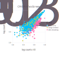
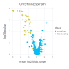

Tutorial
The easiest way to use Crispulator is via the command line config file. If this format is too constraining, the Custom Simulations has a detailed walk- through of writing a custom simulation where each step can be modified according to need.
Graphical overview
The simulation is laid out in the following manner:

Getting started
First, navigate to the Crispulator directory.
You can find the directory by running
$ julia -e 'import Crispulator; println(normpath(pathof(Crispulator), "..", ".."))'There should be a YAML file called example_config.yml. Open this is in a text editor and it should look like this
# This is an example configuration file. Whitespace is important.
# Settings pertaining to the library design
library:
genome:
num-genes: 500
num-guides-per-gene: 5
frac-increasing-genes: 0.02 # fraction of genes with a positive phenotype
frac-decreasing-genes: 0.1 # fraction of genes with a negative phenotype
guides:
crispr-type: CRISPRn # either CRISPRi or CRISPRn
frac-high-quality: 0.9 # fraction of high quality guides
mean-high-quality-kd: 0.85 # mean knockdown by a high quality guide (CRISPRi only)
screen:
type: facs # either facs or growth
num-runs: 10 # how many independent runs
representation: # integer value, how much larger are samples than the library
- transfection: 100
- selection: 100
- sequencing: 100
# screen-type specific parameters
bin-size: 0.25 # size of tail to sample from, must be between 0 and 0.5 (FACS only)
std-noise: 1 # (FACS only)
num-bottlenecks: 10 # (Growth only)This gives access to most dials in the simulation, if something is missing than see Custom Simulations.
Now, lets remove all genes that have a positive phenotype by changing line 8 to 0.0:
frac-increasing-genes: 0.0 # fraction of genes with a positive phenotypeRunning simulation
Now, we can actually run the code by executing the following command
julia run.jl config example_config.yml test_outputHere config tells CRISPulator to use the provided config example_config.yml and test_output is the directory where the results will be saved. This directory will be created if it doesn't exist.
The output should look like
[ Info: Activating simulation environment
Activating project at `~/work/Crispulator.jl/Crispulator.jl`
[ Info: Instantiating environment
Updating registry at `~/.julia/registries/General.toml`
Updating `~/work/Crispulator.jl/Crispulator.jl/Project.toml`
[c7e460c6] + ArgParse v1.1.4
[336ed68f] + CSV v0.10.7
[a2cac450] + ColorBrewer v0.4.0
[861a8166] + Combinatorics v1.0.2
[a81c6b42] + Compose v0.9.4
[a93c6f00] + DataFrames v1.4.3
[864edb3b] + DataStructures v0.18.13
[31c24e10] + Distributions v0.25.79
⌅ [ffbed154] + DocStringExtensions v0.8.6
[c91e804a] + Gadfly v1.3.4
[09f84164] + HypothesisTests v0.10.11
[c8e1da08] + IterTools v1.4.0
[442fdcdd] + Measures v0.3.2
[2913bbd2] + StatsBase v0.33.21
[ddb6d928] + YAML v0.4.8
Updating `~/work/Crispulator.jl/Crispulator.jl/Manifest.toml`
[621f4979] + AbstractFFTs v1.2.1
[79e6a3ab] + Adapt v3.4.0
[c7e460c6] + ArgParse v1.1.4
[13072b0f] + AxisAlgorithms v1.0.1
[336ed68f] + CSV v0.10.7
[49dc2e85] + Calculus v0.5.1
[324d7699] + CategoricalArrays v0.10.7
[d360d2e6] + ChainRulesCore v1.15.6
[9e997f8a] + ChangesOfVariables v0.1.4
[944b1d66] + CodecZlib v0.7.0
[a2cac450] + ColorBrewer v0.4.0
[3da002f7] + ColorTypes v0.11.4
[5ae59095] + Colors v0.12.8
[861a8166] + Combinatorics v1.0.2
[38540f10] + CommonSolve v0.2.3
[34da2185] + Compat v4.4.0
[a81c6b42] + Compose v0.9.4
[187b0558] + ConstructionBase v1.4.1
⌅ [d38c429a] + Contour v0.5.7
[7ad07ef1] + CoupledFields v0.2.0
[a8cc5b0e] + Crayons v4.1.1
[9a962f9c] + DataAPI v1.13.0
[a93c6f00] + DataFrames v1.4.3
[864edb3b] + DataStructures v0.18.13
[e2d170a0] + DataValueInterfaces v1.0.0
[b429d917] + DensityInterface v0.4.0
[b4f34e82] + Distances v0.10.7
[31c24e10] + Distributions v0.25.79
⌅ [ffbed154] + DocStringExtensions v0.8.6
[fa6b7ba4] + DualNumbers v0.6.8
[7a1cc6ca] + FFTW v1.5.0
[48062228] + FilePathsBase v0.9.20
[1a297f60] + FillArrays v0.13.5
[53c48c17] + FixedPointNumbers v0.8.4
[59287772] + Formatting v0.4.2
[c91e804a] + Gadfly v1.3.4
[42e2da0e] + Grisu v1.0.2
[a1b4810d] + Hexagons v0.2.0
[34004b35] + HypergeometricFunctions v0.3.11
[09f84164] + HypothesisTests v0.10.11
[9b13fd28] + IndirectArrays v1.0.0
[842dd82b] + InlineStrings v1.3.2
[a98d9a8b] + Interpolations v0.14.6
[3587e190] + InverseFunctions v0.1.8
[41ab1584] + InvertedIndices v1.1.0
[92d709cd] + IrrationalConstants v0.1.1
[c8e1da08] + IterTools v1.4.0
[82899510] + IteratorInterfaceExtensions v1.0.0
[692b3bcd] + JLLWrappers v1.4.1
[682c06a0] + JSON v0.21.3
[e5e0dc1b] + Juno v0.8.4
[5ab0869b] + KernelDensity v0.6.5
[b964fa9f] + LaTeXStrings v1.3.0
[4345ca2d] + Loess v0.5.4
[2ab3a3ac] + LogExpFunctions v0.3.19
[1914dd2f] + MacroTools v0.5.10
[442fdcdd] + Measures v0.3.2
[e89f7d12] + Media v0.5.0
[e1d29d7a] + Missings v1.0.2
[77ba4419] + NaNMath v1.0.1
[6fe1bfb0] + OffsetArrays v1.12.8
[bac558e1] + OrderedCollections v1.4.1
[90014a1f] + PDMats v0.11.16
[69de0a69] + Parsers v2.5.1
[2dfb63ee] + PooledArrays v1.4.2
[21216c6a] + Preferences v1.3.0
[08abe8d2] + PrettyTables v2.2.1
[1fd47b50] + QuadGK v2.6.0
[c84ed2f1] + Ratios v0.4.3
[189a3867] + Reexport v1.2.2
[ae029012] + Requires v1.3.0
[79098fc4] + Rmath v0.7.0
[f2b01f46] + Roots v2.0.8
[91c51154] + SentinelArrays v1.3.16
[efcf1570] + Setfield v1.1.1
[992d4aef] + Showoff v1.0.3
[66db9d55] + SnoopPrecompile v1.0.1
[a2af1166] + SortingAlgorithms v1.1.0
[276daf66] + SpecialFunctions v2.1.7
[90137ffa] + StaticArrays v1.5.10
[1e83bf80] + StaticArraysCore v1.4.0
[82ae8749] + StatsAPI v1.5.0
[2913bbd2] + StatsBase v0.33.21
[4c63d2b9] + StatsFuns v1.0.1
[69024149] + StringEncodings v0.3.5
[892a3eda] + StringManipulation v0.3.0
[3783bdb8] + TableTraits v1.0.1
[bd369af6] + Tables v1.10.0
[b718987f] + TextWrap v1.0.1
[3bb67fe8] + TranscodingStreams v0.9.9
[ea10d353] + WeakRefStrings v1.4.2
[efce3f68] + WoodburyMatrices v0.5.5
[ddb6d928] + YAML v0.4.8
[f5851436] + FFTW_jll v3.3.10+0
[1d5cc7b8] + IntelOpenMP_jll v2018.0.3+2
[94ce4f54] + Libiconv_jll v1.16.1+1
[856f044c] + MKL_jll v2022.2.0+0
[efe28fd5] + OpenSpecFun_jll v0.5.5+0
[f50d1b31] + Rmath_jll v0.3.0+0
[0dad84c5] + ArgTools v1.1.1
[56f22d72] + Artifacts
[2a0f44e3] + Base64
[ade2ca70] + Dates
[8ba89e20] + Distributed
[f43a241f] + Downloads v1.6.0
[7b1f6079] + FileWatching
[9fa8497b] + Future
[b77e0a4c] + InteractiveUtils
[4af54fe1] + LazyArtifacts
[b27032c2] + LibCURL v0.6.3
[76f85450] + LibGit2
[8f399da3] + Libdl
[37e2e46d] + LinearAlgebra
[56ddb016] + Logging
[d6f4376e] + Markdown
[a63ad114] + Mmap
[ca575930] + NetworkOptions v1.2.0
[44cfe95a] + Pkg v1.8.0
[de0858da] + Printf
[9abbd945] + Profile
[3fa0cd96] + REPL
[9a3f8284] + Random
[ea8e919c] + SHA v0.7.0
[9e88b42a] + Serialization
[1a1011a3] + SharedArrays
[6462fe0b] + Sockets
[2f01184e] + SparseArrays
[10745b16] + Statistics
[4607b0f0] + SuiteSparse
[fa267f1f] + TOML v1.0.0
[a4e569a6] + Tar v1.10.1
[8dfed614] + Test
[cf7118a7] + UUIDs
[4ec0a83e] + Unicode
[e66e0078] + CompilerSupportLibraries_jll v0.5.2+0
[deac9b47] + LibCURL_jll v7.84.0+0
[29816b5a] + LibSSH2_jll v1.10.2+0
[c8ffd9c3] + MbedTLS_jll v2.28.0+0
[14a3606d] + MozillaCACerts_jll v2022.2.1
[4536629a] + OpenBLAS_jll v0.3.20+0
[05823500] + OpenLibm_jll v0.8.1+0
[83775a58] + Zlib_jll v1.2.12+3
[8e850b90] + libblastrampoline_jll v5.1.1+0
[8e850ede] + nghttp2_jll v1.48.0+0
[3f19e933] + p7zip_jll v17.4.0+0
Info Packages marked with ⌅ have new versions available but compatibility constraints restrict them from upgrading. To see why use `status --outdated -m`
[ Info: Loading simulation framework
[ Info: Directory test_output does not exist, attempting to create
[ Info: Using 1 thread(s)
[ Info: Parsing config
[ Info: Running config
[ Info: Generating plots
[ Info: Analyzing results
[ Info: Saving results in test_output
Quick results:
##############
Venn score = 0.991, 95% conf int (0.976, 1.006)
AUPRC score = 0.92, 95% conf int (0.895, 0.945)
SNR score = 3.706 +/- 0.371The test_output/ directory should now be populated with all the files
counts.svg
results_table.csv
volcano.svgOutput
The folder contains one of the raw count scatterplots (left) and a volcano plot of mean log2 fold change versus significance of each gene (right)
 
It also has a useful table that contains all the summary statistic information.
| Row | method | measure | genetype | std_score | mean_score | conf_max | conf_min | n |
|---|---|---|---|---|---|---|---|---|
| String7 | String7 | String15 | Float64 | Float64 | Float64 | Float64 | Int64 | |
| 1 | venn | inc | sigmoidal | NaN | NaN | NaN | NaN | 10 |
| 2 | auprc | inc | sigmoidal | NaN | NaN | NaN | NaN | 10 |
| 3 | venn | dec | sigmoidal | 0.0527046 | 0.983333 | 1.02633 | 0.940333 | 10 |
| 4 | auprc | dec | sigmoidal | 0.0453857 | 0.955173 | 0.992202 | 0.918145 | 10 |
| 5 | venn | incdec | sigmoidal | 0.0527046 | 0.983333 | 1.02633 | 0.940333 | 10 |
| 6 | auprc | incdec | sigmoidal | 0.0648829 | 0.927664 | 0.980599 | 0.874728 | 10 |
| 7 | venn | inc | linear | NaN | NaN | NaN | NaN | 10 |
| 8 | auprc | inc | linear | NaN | NaN | NaN | NaN | 10 |
| 9 | venn | dec | linear | 0.0 | 1.0 | 1.0 | 1.0 | 10 |
| 10 | auprc | dec | linear | 0.026003 | 0.944467 | 0.965682 | 0.923252 | 10 |
The table below describes each column
| Column Name | Meaning |
|---|---|
method | Which summary statistic was used (e.g. Crispulator.auprc) |
measure | Whether the score is only for increasing genes (inc), decreasing (dec) or both (incdec). Allows independent evaluation on which type of genes the screen can accurately evaluate. |
genetype | Whether the score is for linear, sigmoidal, or all genes (see Crispulator.KDPhenotypeRelationship). Helps determine if CRISPRn or CRISPRi is better for this design. |
mean_score | Average score |
std_score | Standard deviation in scores |
conf_max | Upper limit of 95% confidence interval |
conf_min | Lower limit of 95% confidence interval |
n | Number of independent replicates |